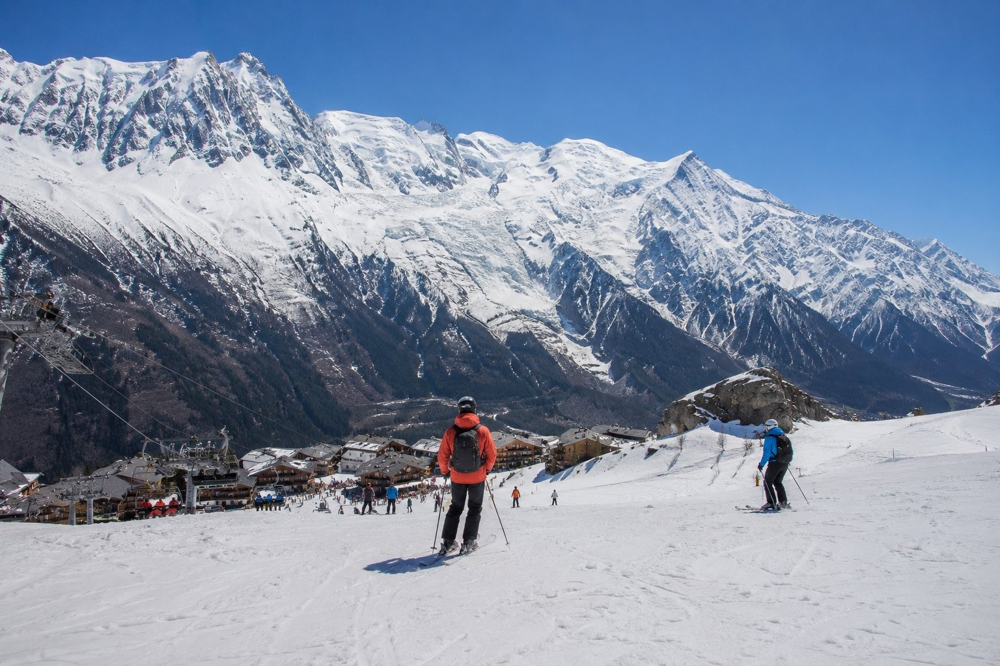

1
Redo för publicering
Hög prio · 234
Natur/äventyr
chamonix
⛷ Skidåkning
bilder/web-ready/chamonix/skidakning-chamonix.jpg
bilder/web-ready/chamonix/redo/skidakning-chamonix.jpg
Prompt
Publishing metadata
- Prioritet
- Hög (234) · bas 10 | startsida +130 | matchar sidtitel/H1 +80 | 7 träffar i sidtext +14
- Alt
- Skidåkning i Chamonix-Mont-Blanc med människor och realistisk resemiljö
- Caption
- Skidåkning i Chamonix-Mont-Blanc
- SEO
- En realistisk resebild från Skidåkning i Chamonix-Mont-Blanc. Bilden visar Skidåkning i Chamonix-Mont-Blanc under relevant resesäsong med naturligt folkliv och tydliga platsdetaljer som gör reseguideavsnittet mer visuellt trovärdigt.
- Target
- https://chamonix.se/ / skidakning